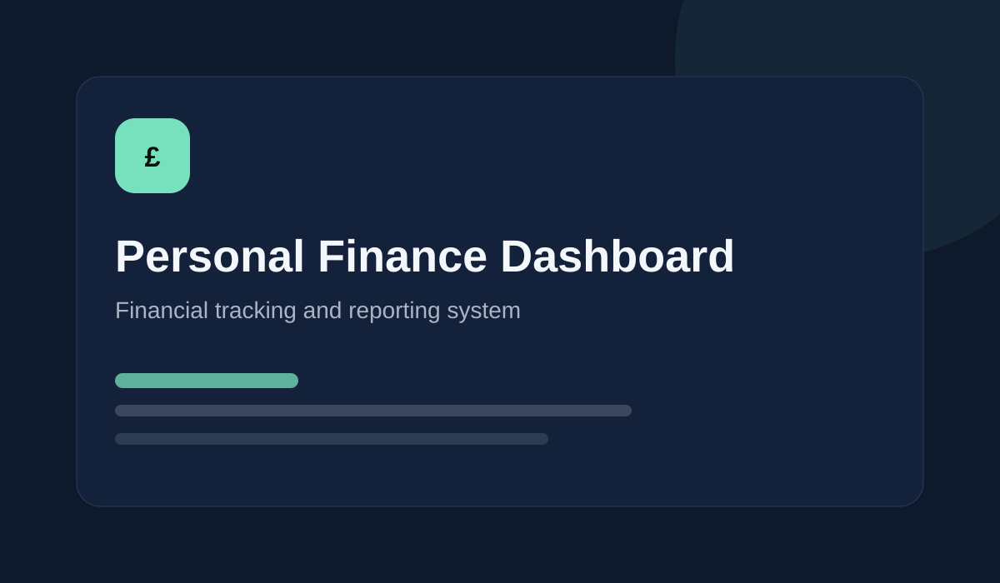

Personal Finance Dashboard
A central system for tracking transactions, holdings, net worth, budgets and monthly financial performance.
- Automated transaction categorisation
- Live net-worth and holdings tracking
- Monthly spending and performance summaries